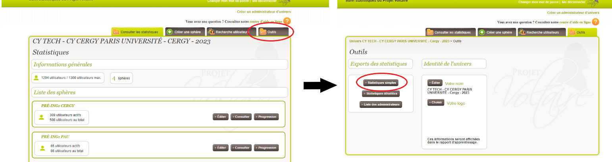
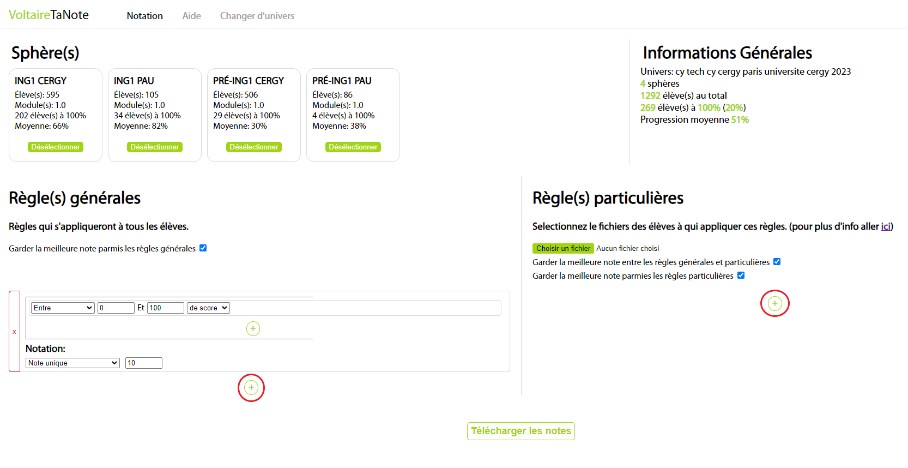
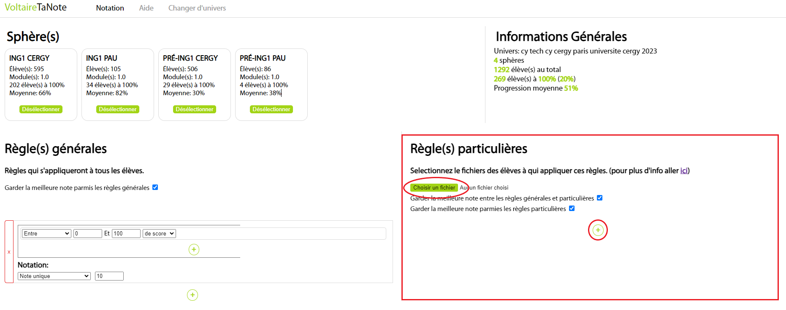

Règle(s) générale(s)
Règles qui s'appliqueront à tous les élèves.
Chargement...
Si vous ne l'avez pas encore téléchargé, vous pouvez le récupérer en vous connectant à votre espace administrateurs. Rendez-vous ensuite dans l'onglet "Outils" et cliquez sur le bouton "Statistiques simples". Une fois le fichier téléchargé appuyez sur le bouton ci-dessus et selectionnez le.
Connectez-vous à votre espace administrateurs. Rendez-vous ensuite dans l'onglet "Outils" et cliquez sur le bouton "Statistiques simples". Une fois le fichier téléchargé revenez sur VoltaireTaNote et dans l'onglet "Changer d'univers" cliquez sur "choisir un fichier" et selectionnez le fichier fraichement téléchargé.
Vous voici dans le menu principal, vous pouvez ici controler les règles de notation à appliquer aux élèves. Appuyez sur "+" pour en ajouter une nouvelle. Une règle se découpe en deux parties.
La première contient les conditions d'application de la règle. Vous pouvez créer des conditions complexes en combinant plusieurs conditions en même temps (appuyez sur "+" dans la règle pour ajouter des conditions). La seconde partie permet de terminer le type de notation à effectuer si les conditions de la règle sont toutes remplies. Il y a deux modes de notation:
Vous pouvez, si vous le désirez, appliquer un système de notation différent pour certains élèves. Pour cela il faudra dans un premier temps remplir un fichier avec le nom et prénom de chaque élève concerné (Cliquez pour télécharger le modèle.). Une fois complété, cliquez sur le boutton "choisir un fichier" dans la partie "Règle(s) particulière(s)" de l'onglet "Notation" et séléctionnez le fichier. Enfin composez vos règles dans la partie "Règle(s) particulière(s)".
Une fois les sphères concernées selectionnées et vos règles établies, cliquez sur "Télécharger les notes", pour recevoir un fichier avec les notes.